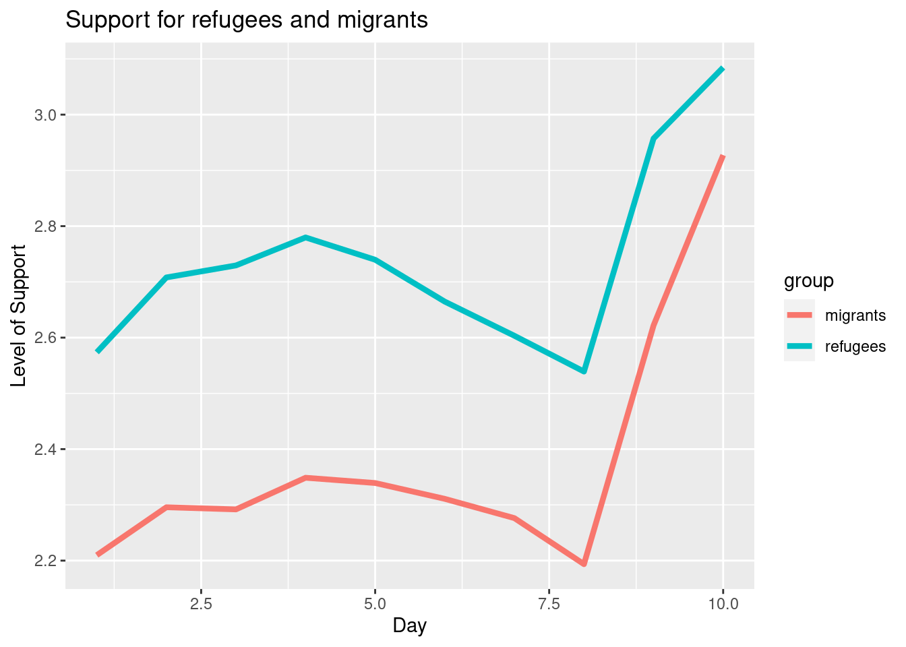
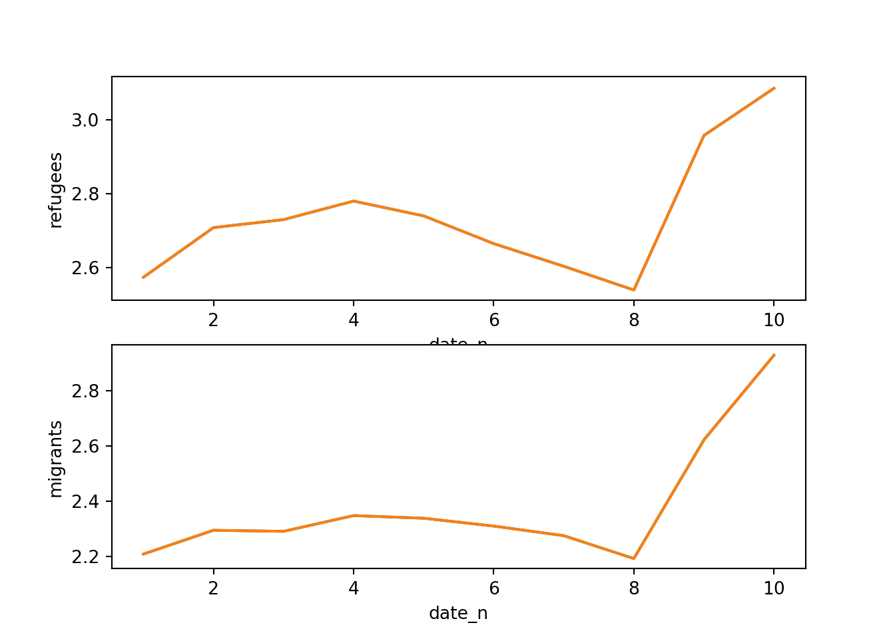
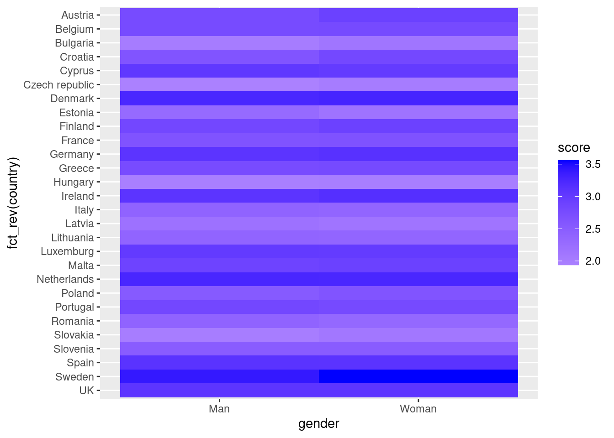
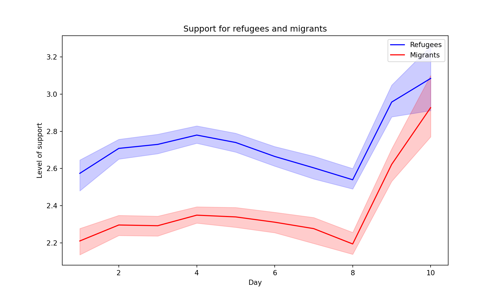
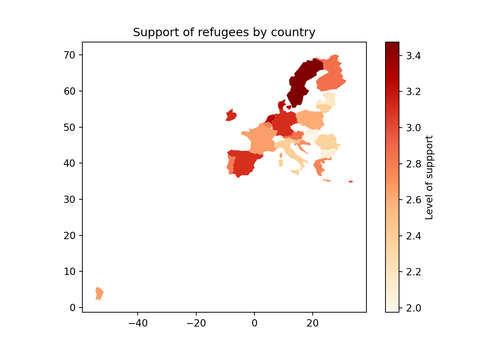
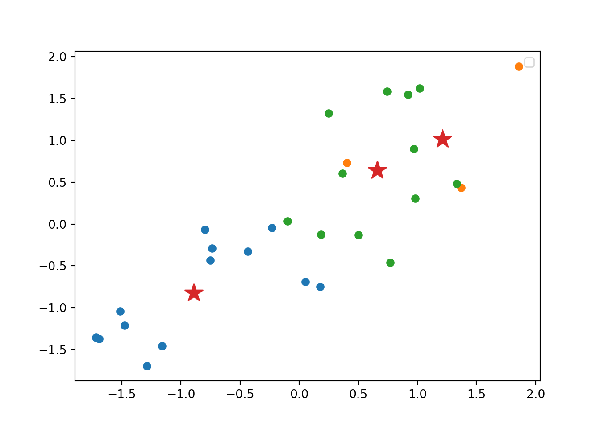
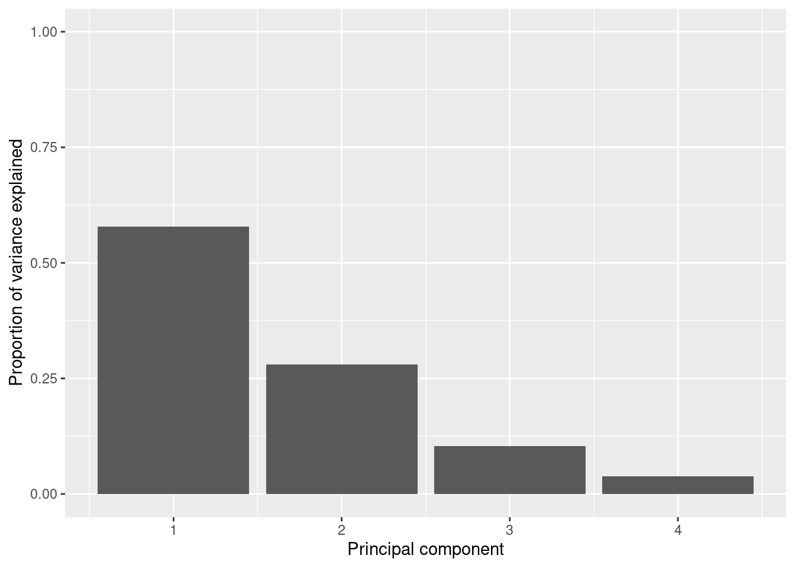
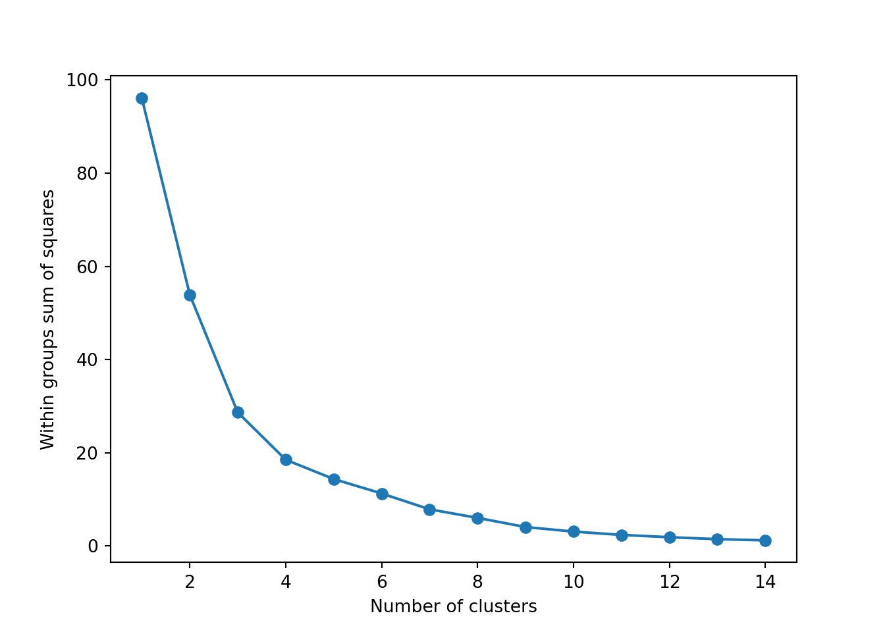
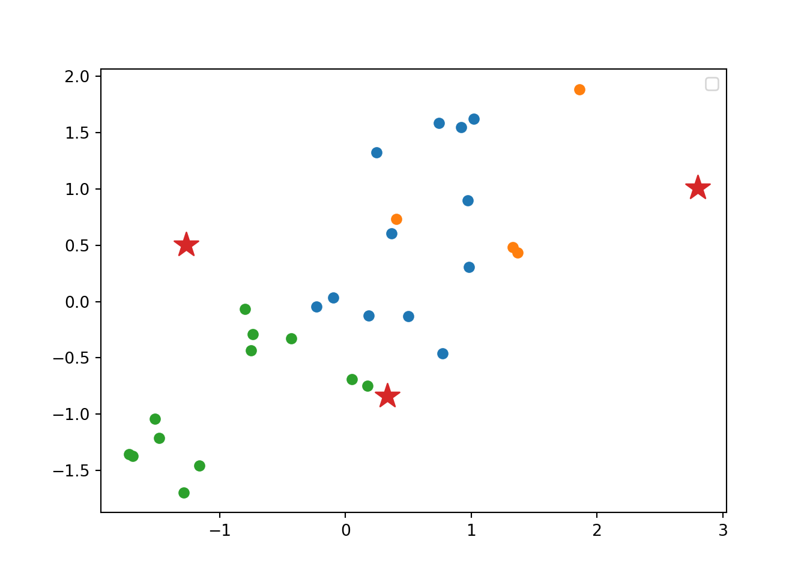

7 Exploratory data analysis
Abstract. This chapter explains how to use data analysis and visualization techniques to understand and communicate the structure and story of our data. It first introduces the reader to exploratory statistics and data visualization in R and Python. Then, it discusses how unsupervised machine learning, in particular clustering and dimensionality reduction techniques, can be used to group similar cases or to decrease the number of features in a dataset.
Keywords. descriptive statistics, visualization, unsupervised machine learning, clustering, dimensionality reduction
Objectives:
- Be able to conduct an exploratory data analysis
- Understand the principles of unsupervised machine learning
- Be able to conduct a cluster analysis
- Be able to apply dimension reduction techniques
7.1 Simple Exploratory Data Analysis
Now that you are familiar with data structures (Chapter 5) and data wrangling (Chapter 6) you are probably eager to get some real insights into your data beyond the basic techniques we briefly introduced in Chapter 2.
As we outlined in Chapter 1, the computational analysis of communication can be bottom-up or top-down, inductive or deductive. Just as in traditional research methods Bryman (2012), sometimes, an inductive bottom-up approach is a goal in itself: after all, explorative analyses are invaluable for generating hypotheses that can be tested in follow-up research. But even when you are conducting a deductive, hypothesis-testing study, it is a good idea to start by describing your dataset using the tools of exploratory data analysis to get a better picture of your data. In fact, we could even go as far as saying that obtaining details like frequency tables, cross-tabulations, and summary statistics (mean, median, mode, etc.) is always necessary, even if your research questions or hypotheses require further complex analysis. For the computational analysis of communication, a significant amount of time may actually be invested at this stage.
Exploratory data analysis (EDA), as originally conceived by Tukey (1977), can be a very powerful framework to prepare and evaluate data, as well as to understand its properties and generate insights at any stage of your research. It is mandatory to do some EDA before any sophisticated analysis to know if the data is clean enough, if there are missing values and outliers, and how the distributions are shaped. Furthermore, before making any multivariate or inferential analysis we might want to know the specific frequencies for each variable, their measures of central tendency, their dispersion, and so on. We might also want to integrate frequencies of different variables into a single table to have an initial picture of their interrelations.
To illustrate how to do this in R and Python, we will use existing representative survey data to analyze how support for migrants or refugees in Europe changes over time and differs per country. The Eurobarometer (freely available at the Leibniz Institute for the Social Sciences – GESIS) has contained these specific questions since 2015. We might pose questions about the variation of a single variable or also describe the covariation of different variables to find patterns in our data. In this section, we will compute basic statistics to answer these questions and in the next section we will visualize them by plotting within and between variable behaviors of a selected group of features of the Eurobarometer conducted in November 2017 to 33193 Europeans.
For most of the EDA we will use tidyverse in R and pandas as well as numpy and scipy in Python (Example 7.1). After loading a clean version of the survey data1 stored in a csv file (using the tidyverse function read_csv in R and the pandas function read_csv in R), checking the dimensions of our data frame (33193 x 17), we probably want to get a global picture of each of our variables by getting a frequency table. This table shows the frequency of different outcomes for every case in a distribution. This means that we can know how many cases we have for each number or category in the distribution of every variable, which is useful in order to have an initial understanding of our data.
Let us first get the distribution of the categorical variable gender by creating tables that include absolute and relative frequencies. The frequency tables (using the dplyr functions group_by and summarize in R, and pandas function value_counts in Python) reveals that 17716 (53.38%) women and 15477 (46.63%) men answered this survey (Example 7.2). We can do the same with the level of support of refugees [support_refugees] (To what extent do you agree or disagree with the following statement: our country should help refugees) and obtain that 4957 (14.93%) persons totally agreed with this statement, 12695 (38.25%) tended to agree, 5931 (16.24%) tended to disagree and 3574 (10.77%) totally disagreed.
Before diving any further into any between variables analysis, you might have noticed that there might be some missing values in the data. These values represent an important amount of data in many real social and communication analysis (just remember that you cannot be forced to answer every question in a telephone or face-to-face survey!). From a statistical point of view, we can have many approaches to address missing values: For example, we can drop either the rows or columns that contain any of them, or we can impute the missing values by predicting them based on their relation with other variables – as we did in Section 6.2 by replacing the missing values with the column mean. It goes beyond the scope of this chapter to explain all the imputation methods (and, in fact, mean imputation has some serious drawbacks when used in subsequent analysis), but at least we need to know how to identify the missing values in our data and how to drop the cases that contain them from our dataset.
In the case of the variable support_refugees we can count its missing data (6576 cases) with base R function is.na and the pandas method isna2. Then we may decide to drop all the records that contain these values in our dataset using the tidyr function drop_na in R and the Pandas function dropna in Python3 (Example 7.3). By doing this we get a cleaner dataset and can continue with a more sophisticated EDA with cross-tabulation and summary statistics for the group of cases.
Now let us cross tabulate the gender and support_refugees to have an initial idea of what the relationship between these two variables might be. With this purpose we create a contingency table or cross-tabulation to get the frequencies in each combination of categories (using dplyr functions group_by, summarize and spread in R, and the pandas function crosstab in Python; example 7.4). From this table you can easily see that 2178 women totally supported helping refugees and 1524 men totally did not. Furthermore, other interesting questions about our data might now arise if we compute summary statistics for a group of cases (using again dplyr functions group_by, summarize and spread, and base mean in R; and pandas function groupby and base mean in Python). For example, you might wonder what the average ages of the women were that totally supported (52.42) or not (53.2) to help refugees. This approach will open a huge amount of possible analysis by grouping variables and estimating different statistics beyond the mean, such as count, sum, median, mode, minimum or maximum, among others.
7.2 Visualizing Data
Data visualization is a powerful technique for both understanding data yourself and communicating the story of your data to others. Based on ggplot2 in R and matplotlib and seaborn in Python, this section covers histograms, line and bar graphs, scatterplots and heatmaps. It touches on combining multiple graphs, communicating uncertainty with boxplots and ribbons, and plotting geospatial data. In fact, visualizing data is an important stage in both EDA and advanced analytics, and we can use graphs to obtain important insights into our data. For example, if we want to visualize the age and the support for refugees of European citizens, we can plot a histogram and a bar graph, respectively.
7.2.1 Plotting Frequencies and Distributions
In the case of nominal data, the most straightforward way to visualize them is to simply count the frequency of value and then plot them as a bar chart. For instance, when we depict the support to help refugees (Example 7.5) you can quickly get that the option “tend to agree” is the most frequently voiced answer.
Example 7.5 Barplot of support for refugees
d2["support_refugees"].value_counts().plot(kind="bar")
plt.show()
ggplot(data=d2) +
geom_bar(mapping = aes(x= support_refugees))
If we have continuous variables, however, having such a bar chart would lead to too many bars: we may lose oversight (and creating the graph may be resource-intensive). Instead, we want to group the data into bins, such as age groups. Hence, a histogram is used to examine the distribution of a continuous variable (ggplot2 function geom_histogram in R and pandas function hist in Python) and a bar graph to inspect the distribution of a categorical one (ggplot2 function geom_bar() in R and matplotlib function plot in Python). In Example 7.6 you can easily see the shape of the distribution of the variable age, with many values close to the average and a slightly bigger tail to the right (not that far from the normal distribution!).
Example 7.6 Histogram of Age
d2.hist(column="age", bins=15)plt.show()
ggplot(data=d2) +
geom_histogram(mapping = aes(x= age), bins = 15)
Another way to show distributions is using bloxplots, which are powerful representations of the distribution of our variables through the use of quartiles that are marked with the 25th, 50th (median) and 75th percentiles of any given variable. By examining the lower and upper levels of two or more distributions you can compare their variability and even detect possible outliers. You can generate multiple boxplots to compare the ages of the surveyed citizens by country and quickly see that in terms of age the distributions of Spain and Greece are quite similar, but we can identify some differences between Croatia and the Netherlands. In R we use the base function geom_boxplot, while in Python we use the seaborn function boxplot.
Example 7.7 Bloxplots of age by country
d2 = d2.sort_values(by="country")
plt.figure(figsize=(8, 8))
sns.boxplot(x="age", y="country", data=d2)
plt.show()
ggplot(d2, aes(y=fct_rev(country), x=age))+
geom_boxplot()
7.2.2 Plotting Relationships
After having inspected distributions of single variables, you may want to check how two variables are related. We are going to discuss two ways of doing so: plotting data over time, and scatterplots to illustrate the relationship between two continuous variables.
The Eurobarometer collects data for 15 days (in the example from November 5 to 19, 2017) and you may wonder if the level of support to refugees or even to general migrants changes over the time. This is actually a simple time series and you can use a line graph to represent it. Firstly you must use a numerical variable for the level of support (support_refugees_n, which ranges from 1 to 4, 4 being the maximum support) and group it by day in order to get the average for each day. In the case of R, you can plot the two series using the base function plot, or you can use the ggplot2 function geom_line. In the case of Python you can use the matplotlib function plot or the seaborn function lineplot. To start, Example 7.8 shows how to create a graph for the average support for refugees by day.
Example 7.8 Line graph of average support for refugees by day
support_refugees = d2.groupby(["date_n"])["support_refugees_n"].mean()
support_refugees = support_refugees.to_frame()
plt.plot(support_refugees.index, support_refugees["support_refugees_n"])
plt.xlabel("Day")
plt.ylabel("Support for refugees")
plt.show()
support_refugees = d2 %>%
group_by(date_n) %>%
summarise(support=mean(support_refugees_n,
na.rm = TRUE))
ggplot(support_refugees,aes(x=date_n, y=support))+
geom_line() +
xlab("Day") +
ylab("Support for refugees")
To also plot the support for migrants, you can combine multiple subgraphs in a single plot, giving the reader a broader and more comparative perspective (Example 7.9). In R, the geom_line also takes a color aesthetic, but this requires the data to be in long format. So, we first reshape the data and also change the factor labels to get a better legend (see Section 6.5). In Python, you can plot the two lines as separate figures and add the pyplot function show to display an integrated figure.
Example 7.9 Plotting multiple lines in one graph
# Combine data
support_combined = d2.groupby(["date_n"]).agg(
refugees=("support_refugees_n", "mean"),
migrants=("support_migrants_n", "mean"),
)
# plot
sns.lineplot(x="date_n", y="refugees", data=support_combined, color="blue")
sns.lineplot(x="date_n", y="migrants", data=support_combined, color="red")
plt.xlabel("Day")
plt.ylabel("Level of support")
plt.title("Support of refugees and migrants")
plt.show()
# Combine data
support_combined = d2 %>% group_by(date_n) %>%
summarise(
refugees=mean(support_refugees_n, na.rm = TRUE),
migrants=mean(support_migrants_n, na.rm = TRUE))
# Pivot to long format and plot
support_long = support_combined %>%
pivot_longer(-date_n, names_to="group",
values_to="support")
ggplot(support_long,
aes(x=date_n, y=support, colour=group)) +
geom_line(size = 1.5) +
labs(title="Support for refugees and migrants",
x="Day", y="Level of Support") 
Alternatively, you can create multiple subplots, one for each group that you want to show (Example 7.10). In ggplot (R), you can use the facet_grid function to automatically create subplots that each show one of the groups. In the case of Python you can use the matplotlib function subplots that allows you to configure multiple plots in a single one.
Example 7.10 Creating subfigures)
f, axes = plt.subplots(2, 1)
sns.lineplot(x="date_n", y="refugees", data=support_combined, ax=axes[0])
sns.lineplot(x="date_n", y="migrants", data=support_combined, ax=axes[1])
sns.lineplot(x="date_n", y="support_refugees_n", data=d2, ci=0, ax=axes[0])
sns.lineplot(x="date_n", y="support_migrants_n", data=d2, ci=0, ax=axes[1])
plt.show()
ggplot(support_long, aes(x=date_n, y=support)) +
geom_line() + facet_grid(rows=vars(group)) +
xlab("Day") + ylab("Support")
Now if you want to explore the possible correlation between the average support for refugees (mean_support_refugees_by_day) and the average support to migrants by year (mean_support_migrants_by_day), you might need a scatterplot, which is a better way to visualize the type and strength of this relationship scatter.
Example 7.11 Scatterplot of average support for refugees and migrants by year
sns.scatterplot(data=support_combined, x="refugees", y="migrants")
ggplot(support_combined,
aes(x=refugees, y=migrants))+
geom_point()
A scatterplot uses dots to depict the values of two variables in a Cartesian plane (with coordinates for the axes \(x\) and \(y\)). You can easily plot this figure in R using the ggplot2 function geom_point (and geom_smooth to display a regression line!), or in Python using seaborn function scatterplot (lmplot to include the regression line as shown in Example 7.12).
Looking at the dispersion of points in the provided example you can infer that there might be a positive correlation between the two variables, or in other words, the more the average support to refugees the more the average support to migrants over time.
We can check and measure the existence of this correlation by computing the Pearson correlation coefficient or Pearson’s r, which is the most well-known correlation function. As you probably remember from your statistics class, a correlation refers to a relationship between two continuous variables and is usually applied to measure linear relationships (although there also exist nonlinear correlation coefficients, such as Spearman’s \(\rho\)). Specifically, Pearson’s \(r\) measures the linear correlation between two variables (X and Y) producing a value between \(-1\) and \(+1\), where 0 depicts the absence of correlation and values near to 1 a strong correlation. The signs (\(+\) or \(-\)) represent the direction of the relationship (being positive if two variables variate in the same direction, and negative if they vary in the opposite direction). The correlation coefficient is usually represented with r or the Greek letter \(\rho\) and mathematically expressed as:
You can estimate this correlation coefficient with the pandas function corr in Python and the base R function cor in R. As shown in Example 7.13 the two variables plotted above are highly correlated with a coefficient of 0.95.
Another useful representation is the heatmap. This figure can help you plot a continuous variable using a color scale and shows its relation with another two variables. This means that you represent your data as colors, which might be useful for understanding patterns. For example, we may wonder what the level of support for refugees is given the nationality and the gender of the individuals. For this visualization, it is necessary to create a proper data frame (Example 7.14) to plot the heatmap, in which each number of your continuous variable *_refugees_n* is included in a table where each axis (x= gender, y=country) represents the categorical variables. This pivoted table stored in an object called pivot_data can be generated using some of the already explained commands.
In the first resulting figure proposed in Example 7.15, the lighter the blue the greater the support in each combination of country \(\times\) gender. You can see that level of support is similar in countries such as Slovenia or Spain, and is different in the Czech Republic or Austria. It also seems that women have a higher level of support. For this default heatmap we can use the ggplot2 function geom_tile in R and seaborn function heatmap in Python. To personalize the scale colors (e.g. if we want a scale of blues) we can use the ggplot2 function scale_fill_gradient in R or the parameter cmap of the seaborn function heatmap in Python.
Example 7.15 Heatmap of country gender and support for refugees
plt.figure(figsize=(10, 6))
sns.heatmap(pivot_data, cmap="Blues", cbar_kws={"label": "support_refugees_n"})
plt.show()
ggplot(pivot_data, aes(x = gender,
y = fct_rev(country), fill = score)) +
geom_tile()+
scale_fill_gradient2(low="white", high="blue")
As you will notice, one of the goals of EDA is exploring the variance of our variables, which includes some uncertainty about their behavior. We will introduce you to two basic plots to visually communicate this uncertainty. Firstly, ribbons and area plots can help us to clearly identify a predefined interval of a variable in order to interpret its variance over some cases. Let us mark this interval in 0.15 points in the above-mentioned plots of the average support to refugees or migrants by day, and we can see that the lines tend to converge more on the very last day and are more separated by day four. This simple representation can be conducted in R using the ggplot2 function geom_ribbon and in Python using the parameter ci of the seaborn function lineplot.
Example 7.16 Add ribbons to the graph lines of support to refugees and migrants
sns.lineplot(
x="date_n",
y="support_refugees_n",
data=d2,
color="blue",
ci=100,
label="Refugees",
)
sns.lineplot(
x="date_n",
y="support_migrants_n",
data=d2,
color="red",
ci=100,
label="Migrants",
)
plt.xlabel("Day")
plt.ylabel("Level of support")
plt.title("Support for refugees and migrants")
plt.show()
ggplot(support_long,
aes(x=date_n, y=support, color=group)) +
geom_line(size=1.5) +
geom_ribbon(aes(fill=group, ymin=support-0.15,
ymax=support+0.15),
alpha=.1, lty=0) +
ggtitle("Support for refugees and migrants")
7.2.3 Plotting Geospatial Data
Plotting geospatial data is a more powerful tool to compare countries or other regions. Maps are very easy to understand and can have greater impact to all kinds of readers, which make them a useful representation for a wide range of studies that any computational analyst has to deal with. Geospatial data is based on the specific location of any country, region, city or geographical area, marked by its coordinates, latitude and longitude, that can later build points and polygon areas. The coordinates are normally mandatory to plot any data on a map, but are not always provided in our raw data. In those cases, we must join the geographical information we have (i.e. the name of a country) with its coordinates in order to have an accurate data frame for plotting geospatial data. Some libraries in R and Python might directly read and interpret different kinds of geospatial information by recognizing strings such as “France” or “Paris”, but in the end they will be converted into coordinates.
Using the very same data as our example, we might want to plot in a map the level of support to European refugees by country. Firstly, we should create a data frame with the average level of support to refugees by country (supports_country). Secondly, we must install an existing library that provides you with accurate geospatial information. In the case of R, we recommend the package maps which contains the function map_data that helps you generate an object with geospatial information of specific areas, countries or regions, that can be easily read and plotted by ggplot2. Even if not explained in this book, we also recommend ggmap in R (Kahle and Wickham, 2013). When working with Python we recommend geopandas that works very well with pandas and matplotlib (it will also need some additional packages such as descartes).
In Example 7.17 we illustrate how to plot a world map (from existing geographical information). We then save a partial map into the object some_eu_maps containing the European countries that participated in the survey. After we merge supports_country and some_eu_maps (by region) and get a complete data frame called support_map with coordinates for each country (Example 7.18). Finally, we plot it using the ggplot2 function geom_polygon in R and the geopandas method plot in Python (Example 7.19). Voilà: a nice and comprehensible representation of our data with a scale of colors!
Example 7.17 Simple world map
supports_country = (
d2.groupby(["country"])["support_refugees_n"]
.mean()
.to_frame()
.reset_index()
)
# Load a world map and plot it
wmap = gpd.read_file(gpd.datasets.get_path("naturalearth_lowres"))
wmap = wmap.rename(columns={"name": "country"})
wmap.plot()
supports_country = d2 %>%
group_by(country) %>%
summarise(m=mean(support_refugees_n,na.rm=TRUE))
#Load a world map and plot it
wmap = map_data("world")
ggplot(wmap, aes(x=long,y=lat,group=group)) +
geom_polygon(fill="lightgray", colour = "white")
Example 7.19 Map of Europe with the average level of support for refugees by country
m = gpd.GeoDataFrame(m, geometry=m["geometry"])
m.plot(
column="support_refugees_n",
legend=True,
cmap="OrRd",
legend_kwds={"label": "Level of suppport"},
).set_title("Support of refugees by country")
ggplot(m, aes(long, lat, group=group))+
geom_polygon(aes(fill = m), color="white")+
scale_fill_viridis_c(option="B")+
labs(title="Support for refugees by country",
fill="Level of support")
7.2.4 Other Possibilities
There are many other ways of visualizing data. For EDA we have covered in this chapter only some of the most used techniques but they might be still limited for your future work. There are many books that cover data visualization in detail, such as Tufte (2006), Cairo (2019), and Kirk (2016). There are also many online resources, such as the Python Graph Gallery 7 and the R Graph Gallery 8, which introduce you to other useful plot types. These sites include code examples, many using the ggplot, matplotlib and seaborn packages introduced here, but also using other packages such as bokeh or plotly for interactive plots.
7.3 Clustering and Dimensionality Reduction
So far, we have reviewed traditional statistical exploratory and visualization techniques that any social scientist should be able to apply. A more computational next step in your EDA workflow is using machine learning (ML) to let your computer “learn” about our data and in turn give more initial insights. ML is a branch of artificial intelligence that uses algorithms to interact with data and obtain some patterns or rules that characterize that data. We normally distinguish between supervised machine learning (SML) and unsupervised machine learning (UML). In Chapter 8, we will come back to this distinction. For now, it may suffice to say that the main characteristic of unsupervised methods is that we do not have any measurement available for a dependent variable, label, or categorization, which we want to predict. Instead, we want to identify patterns in the data without knowing in advance what these may look like. In this, unsupervised machine learning is very much of a inductive, bottom-up technique (see Chapter 1 and Boumans and Trilling (2016)).
In this chapter, we will focus on UML as a means of finding groups and latent dimensions in our data, which can also help to reduce our number of variables. Specifically, we will use base R and Python’s scikit-learn to conduct \(k\)-means clustering, hierarchical clustering, and principal component analysis (PCA) as well as the closely related singular value decomposition (SVD).
In data mining, we use clustering as a UML technique that aims to find the relationship between a set of descriptive variables. By doing cluster analysis we can identify underlying groups in our data that we will call clusters. Imagine we want to explore how European countries can be grouped based on their average support to refugees/migrants, age and educational level. We might create some a priori groups (such as southern versus northern countries), but cluster analysis would be a great method to let the data “talk” and then create the most appropriate groups for this specific case. As in all UML, the groups will come unlabeled and the computational analyst will be in charge of finding an appropriate and meaningful label for each cluster to better communicate the results.
7.3.1 \(k\)-means Clustering
\(k\)-means is a very frequently used algorithm to perform cluster analysis. Its main advantage is that, compared to the hierarchical clustering methods we will discuss later, it is very fast and does not consume many resources. This makes it especially useful for larger datasets.
\(k\)-means cluster analysis is a method that takes any number of observations (cases) and groups them into a given number of clusters based on the proximity of each observation to the mean of the formed cluster (centroid). Mathematically, we measure this proximity as the distance of any given point to its cluster center, and can be expressed as
where \(\|x_n - \mu_k\|\) is the distance between the data point \(x_n\) and the center of the cluster \(\mu_k\).
Instead of taking the mean, some variations of this algorithm take the median (\(k\)-medians) or a representative observation, also called medoid (\(k\)-medoids or partitioning around medoids, PAM) as a way to optimize the initial method.
Because \(k\)-means clustering calculates distances between cases, these distances need to be meaningful – which is only the cases if the scales on which the variables are measured are comparable. If all your variables are measured on the same (continuous) scale with the same endpoints, you may be fine. In most cases, you need to normalize your data by transforming them into, for instance, \(z\)-scores9, or a scale from 0 to 1.
Hence, the first thing we do in our example, is to prepare a proper dataset with only continuous variables, scaling the data (for comparability) and avoiding missing values (drop or impute). In Example 7.20, we will use the variables support to refugees (support_refugees_n), support to migrants (support_migrants_n), age (age) and educational level (number of years of education) (educational_n) and will create a data frame d3 with the mean of all these variables for each country (each observation will be a country). \(k\)-means requires us to specify the number of clusters, \(k\), in advance. This is a tricky question, and (besides arbitrarily deciding \(k\)!), you essentially need to re-estimate your model multiple times with different \(k\)s.
The simplest method to obtain the optimal number of clusters is to estimate the variability within the groups for different runs. This means that we must run \(k\)-means for different number of clusters (e.g. 1 to 15 clusters) and then choose the number of clusters that decreases the variability maintaining the highest number of clusters. When you generate and plot a vector with the variability, or more technically, the within-cluster sum of squares (WSS) obtained after each execution, it is easy to identify the optimal number: just look at the bend (knee or elbow) and you will find the point where it decreases the most and then get the optimal number of clusters (three clusters in our example).
Now we can estimate our final model (Example 7.21). We generate 25 initial random centroids (the algorithm will choose the one that optimizes the cost). The default of this parameter is 1, but it is recommended to set it with a higher number (i.e. 20 to 50) to guarantee the maximum benefit of the method. The base R function kmeans and scikit-learn function KMeans in Python will produce the clustering. You can observe the mean (scaled) for each variable in each cluster, as well as the corresponding cluster for each observation.
Using the function fviz_cluster of the library factoextra in R, or the pyplot function scatter in Python, you can get a visualization of the clusters. In Example 7.22 you can clearly identify that the clusters correspond to Nordic countries (more support to foreigners, more education and age), Central and Southern European countries (middle support, lower education and age), and Eastern European countries (less support, lower education and age)10 .
Example 7.22 Visualization of clusters
for cluster in range(km_res.n_clusters):
plt.scatter(
d3_s[km_res.labels_ == cluster, 0], d3_s[km_res.labels_ == cluster, 1]
)
plt.scatter(
km_res.cluster_centers_[:, 0],
km_res.cluster_centers_[:, 1],
s=250,
marker="*",
)
plt.legend(scatterpoints=1)
plt.show()
fviz_cluster(km.res, d3_s, ellipse.type="norm")
7.3.2 Hierarchical Clustering
Another method to conduct a cluster analysis is hierarchical clustering, which builds a hierarchy of clusters that we can visualize in a dendogram. This algorithm has two versions: a bottom-up approach (observations begin in their own clusters), also called agglomerative, and a top-down approach (all observations begin in one cluster), also called divisive. We will follow the bottom-up approach in this chapter and when you look at the dendogram you will realize how this strategy repeatedly combines the two nearest clusters at the bottom into a larger one in the top. The distance between clusters is initially estimated for every pair of observation points and then put every point in its own cluster in order to get the closest pair of points and iteratively compute the distance between each new cluster and the previous ones. This is the internal rule of the algorithm and we must choose a specific linkage method (complete, single, average or centroid, or Ward’s linkage). Ward’s linkage is a good default choice: it minimizes the variance of the clusters being merged. In doing so, it tends to produce roughly evenly sized clusters and is less sensitive to noise and outliers than some of the other methods. In Example 7.23 we will use the function hcut of the package factoextra in R and scikit-learn function AgglomerativeClustering in Python, to compute the hierarchical clustering.
A big advantage of hierarchical clustering is that, once estimated, you can freely choose the number of clusters in which to group your cases without re-estimating the model. If you decide, for instance, to use four instead of three clusters, then the cases in one of your three clusters are divided into two subgroups. With \(k\)-means, in contrast, a three-cluster solution can be completely different from a four-cluster solution. However, this comes at a big cost: hierarchical clustering requires a lot more computing resources and may therefore not be feasible for large datasets.
We can then plot the dendogram with base R function plot and scipy (module cluster.hierarchy) function dendogram in Python. The summary of the initial model suggest two clusters (size=2) but by looking at the dendogram you can choose the number of clusters you want to work with by choosing a height (for example four to get three clusters).
Example 7.24 Dendogram to visualize the hierarchical clustering
dendrogram = sch.dendrogram(
sch.linkage(d3_s, method="complete"),
labels=list(d3.index),
leaf_rotation=90,
)plot(hc.res, cex=0.5)
If you re-run the hierarchical clustering for three clusters (Example 7.25) and visualize it (Example 7.26) you will get a graph similar to the one produced by \(k\)-means.
Example 7.26 Re-run hierarchical clustering with three clusters
for cluster in range(hc_res.n_clusters):
plt.scatter(
d3_s[hc_res.labels_ == cluster, 0], d3_s[hc_res.labels_ == cluster, 1]
)
plt.legend(scatterpoints=1)
plt.show()
fviz_cluster(hc.res, d3_s, ellipse.type="convex")
7.3.3 Principal Component Analysis and Singular Value Decomposition
Cluster analyses are in principle used to group similar cases. Sometimes, we want to group similar variables instead. A well-known method for this is principal component analysis (PCA)11. This unsupervised method is useful to reduce the dimensionality of your data by creating new uncorrelated variables or components that describe the original dataset. PCA uses linear transformations to create principal components that are ordered by the level of explained variance (the first component will catch the largest variance). We will get as many principal components as number of variables we have in the dataset, but when we look at the cumulative variance we can easily select only few of these components to explain most of the variance and thus work with a smaller and summarized data frame that might be more convenient for many tasks (i.e. those that require avoiding multicollinearity or just need to be more computationally efficient). By simplifying the complexity of our data we can have a first understanding of how our variables are related and also of how our observations might be grouped. All components have specific loadings for each original variable, which can tell you how the old variables are represented in the new components. This statistical technique is especially useful in EDA when working with high dimensional datasets but it can be used in many other situations.
The mathematics behind PCA can be relatively easy to understand. However, for the sake of simplicity, we will just say that in order to obtain the principal components the algorithm firstly has to compute the mean of each variable and then compute the covariance matrix of the data. This matrix contains the covariance between the elements of a vector and the output will be a square matrix with an identical number of rows and columns, corresponding to the total number of dimensions of the original dataset. Specifically, we can calculate the covariance matrix of the variables X and y with the formula:
Secondly, using the covariance matrix the algorithm computes the eigenvectors and their corresponding eigenvalues, and then drop the eigenvectors with the lowest eigenvalues. With this reduced matrix it transforms the original values to the new subspace in order to obtain the principal components that will synthesize the original dataset.
Let us now conduct a PCA over the Eurobarometer data. In Example 7.27 we will re-use the sub-data frame d3 containing the means of 4 variables (support to refugees, support to migrants, age and educational level) for each of the 30 European countries. The question is can we have a new data frame containing less than 4 variables but that explains most of the variance, or in other words, that represents our original dataset well enough, but with fewer dimensions? As long as our features are measured on different scales, it is normally suggested to center (to mean 0) and scale (to standard deviation 1) the data. You may also know this transformation as “calculating \(z\)-scores”. We can perform the PCA in R using the base function prcomp and in Python using the function PCA of the module decomposition of scikit-learn.
The generated object with the PCA contains different elements (in R sdev, rotation, center, scale and x) or attributes in Python (components_, explained_variance_, explained_variance_ratio, singular_values_, mean_, n_components_, n_features_, n_samples_, and noise_variance_). In the resulting object we can see the values of four principal components of each country, and the values of the loadings, technically called eigenvalues, for the variables in each principal component. In our example we can see that support for refugees and migrants are more represented on PC1, while age and educational level are more represented on PC2. If we plot the first two principal components using base function biplot in R and the library bioinfokit in Python (Example 7.28), we can clearly see how the variables are associated with either PC1 or with PC2 (we might also want to plot any pair of the four components!). But we can also get a picture of how countries are grouped based only in these two new variables.
Example 7.28 Plot PC1 and PC2
var1 = round(pca_n.explained_variance_ratio_[0], 2)
var2 = round(pca_n.explained_variance_ratio_[1], 2)
bioinfokit.visuz.cluster.biplot(
cscore=pca,
loadings=pca_n.components_,
labels=pca_df_2.index.values,
var1=var1,
var2=var2,
show=True,
)
biplot(x = pca, scale = 0, cex = 0.6,
col = c("blue4", "brown3"))
So far we are not sure how many components are enough to accurately represent our data, so we need to know how much variance (which is the square of the standard deviation) is explained by each component. We can get the values (Example 7.29) and plot the proportion of explained variance (Example 7.30). We get that the first component explains 57.85% of the variance, the second 27.97%, the third 10.34% and the fourth just 3.83%.
Example 7.30 Plot of the proportion of variance explained
plt.bar([1, 2, 3, 4], pca_n.explained_variance_ratio_)plt.ylabel("Proportion of variance explained")
plt.xlabel("Principal component")
plt.xticks([1, 2, 3, 4])plt.show()
ggplot(prop_var, aes(x=pc, y=var)) +
geom_col() +
scale_y_continuous(limits = c(0,1)) +
xlab("Principal component") +
ylab("Proportion of variance explained")
When we estimate (Example 7.31) and plot (Example 7.32) the cumulative explained variance it is easy to identify that with just the two first components we explain 88.82% of the variance. It might now seem a good deal to reduce our dataset from four to two variables, or let’s say half of the data, but retaining most of the original information.
Example 7.32 Plot of the cumulative explained variance
plt.plot(cvar)
plt.xlabel("number of components")
plt.xticks(np.arange(len(cvar)), np.arange(1, len(cvar) + 1))plt.ylabel("cumulative explained variance")
plt.show()
ggplot(cvar, aes(x=pc, y=var)) +
geom_point() +
geom_line() +
theme_bw() +
xlab("Principal component") +
ylab("Cumulative explained variance")
And what if we want to use this PCA and deploy a clustering (as explained above) with just these two new variables instead of the four original ones? Just repeat the \(k\)-means procedure but now using a new smaller data frame selecting PC1 and PC2 from the PCA. After estimating the optimal number of clusters (three again!) we can compute and visualize the clusters, and get a very similar picture to the one obtained in the previous examples, with little differences such as the change of cluster of the Netherlands (more similar now to the Nordic countries!). This last exercise is a good example of how to combine different techniques in EDA.
Example 7.33 Combining PCA to reduce dimensionality and \(k\)-means to group countries
# Generate a new dataset with first components
d5 = pca[:, 0:2]
d5[0:5]
# Get optimal number of clustersarray([[-0.10328545, -1.22001827],
[-0.02935539, -0.08470675],
[-1.66051792, 0.94953266],
[-1.26750204, -0.81909268],
[ 0.06058969, -0.19592792]])wss = []
for i in range(1, 15):
km_out = KMeans(n_clusters=i, n_init=20)
km_out.fit(d5)
wss.append(km_out.inertia_)
# Plot sum of squares vs. number of clustersKMeans(n_clusters=14, n_init=20)In a Jupyter environment, please rerun this cell to show the HTML representation or trust the notebook.
On GitHub, the HTML representation is unable to render, please try loading this page with nbviewer.org.
KMeans(n_clusters=14, n_init=20)
plt.plot(range(1, 15), wss, marker="o")
plt.xlabel("Number of clusters")
plt.ylabel("Within groups sum of squares")
plt.show()
# Compute again with k = 3 and visualize
km_res_5 = KMeans(n_clusters=3, n_init=25).fit(d5)
for cluster in range(km_res_5.n_clusters):
plt.scatter(
d3_s[km_res_5.labels_ == cluster, 0],
d3_s[km_res_5.labels_ == cluster, 1],
)
plt.scatter(
km_res_5.cluster_centers_[:, 0],
km_res_5.cluster_centers_[:, 1],
s=250,
marker="*",
)
plt.legend(scatterpoints=1)
plt.show()
#Generate a new dataset with first components
d5 = pca$x[, c("PC1", "PC2")]
head(d5) PC1 PC2
Austria 0.10142430 1.19803416
Belgium 0.02882642 0.08318037
Bulgaria 1.63059623 -0.93242257
Croatia 1.24466229 0.80433304
Cyprus -0.05949790 0.19239739
Czech republic 2.17979559 -0.66348027#Get optimal number of clusters
wss = list()
for (i in 1:15) {
km.out = kmeans(d5, centers = i, nstart = 20)
wss[[i]] = tibble(k=i, ss=km.out$tot.withinss)
}
wss = bind_rows(wss)
# Plot sum of squares vs. number of clusters
ggplot(wss, aes(x=k, y=ss)) + geom_line() +
xlab("Number of Clusters") +
ylab("Within groups sum of squares")
# Compute again with k = 3 and visualize
set.seed(123)
km.res_5 <- kmeans(d5, 3, nstart = 25)
fviz_cluster(km.res_5, d5, ellipse.type = "norm")
When your dataset gets bigger, though, you may actually not use PCA but the very much related singular value decomposition, SVD. They are closely interrelated, and in fact SVD can be used “under the hood” to estimate a PCA. While PCA is taught in a lot of classical textbooks for statistics in the social sciences, SVD is usually not. Yet, it has a great advantage: in the way that it is implemented in scikit-learn, it does not require to store the (dense) covariance matrix in memory (see the feature box in ?sec-workflow for more information on sparse versus dense matrices). This means that once your dataset grows bigger than typical survey datasets, a PCA maybe quickly become impossible to estimate, whereas the SVD can still be estimated without much resource required. Therefore, especially when you are working with textual data, you will see that SVD is used instead of PCA. For all practical purposes, the way that you can use and interpret the results stays the same.
Original data ZA6928_v1-0-0.csv was cleaned and prepared for the exercise. The preparation of the data are in the notebooks cleaning_eurobarometer_py.ipynb and cleaning_eurobarometer_r.ipynb.↩︎
See https://cssbook.net/datasets” for more information.↩︎
We may also use: dropna(axis=‘columns’) if you want to drop columns instead of rows.↩︎
Freely available at socviz.co/↩︎
A \(z\)-transformation means rescaling data to a mean of 0 and a standard deviation of 1↩︎
We can re-run this cluster analysis using \(k\)-medoids or partitioning around medoids (PAM) and get similar results (the three medoids are: Slovakia, Belgium and Denmark), both in data and visualization. In R you must install the package cluster than contains the function
pam, and in Python the package scikit-learn-extra with the functionKmedoids.↩︎If you had to learn statistics using SPSS, you have almost certainly already conducted a PCA. Quite counter-intuitively, the default analysis that is run when clicking on the “Factor” menu in SPSS, is a PCA.↩︎